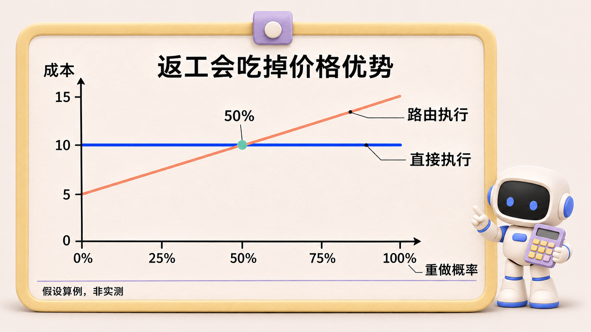
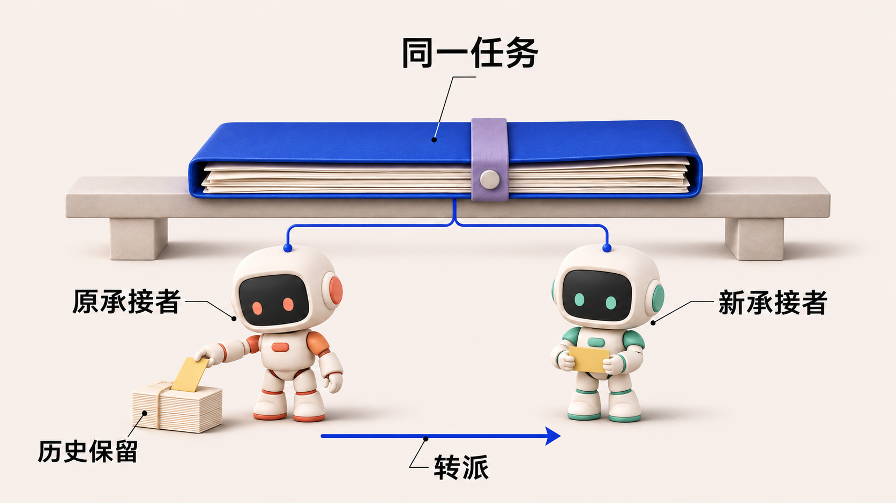
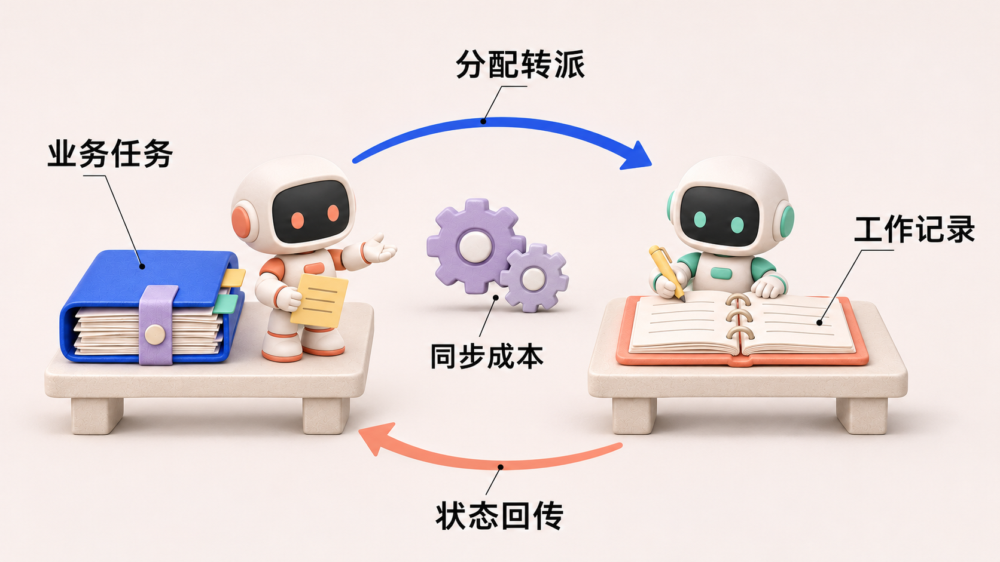
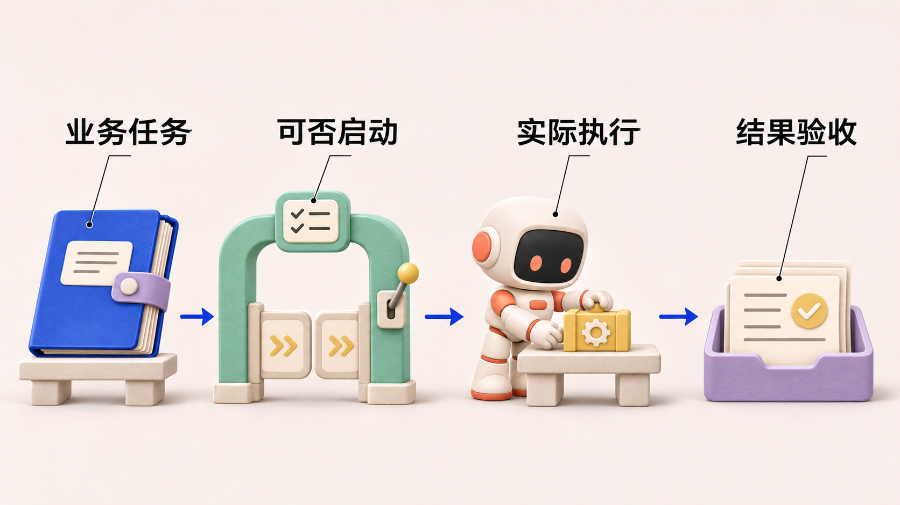
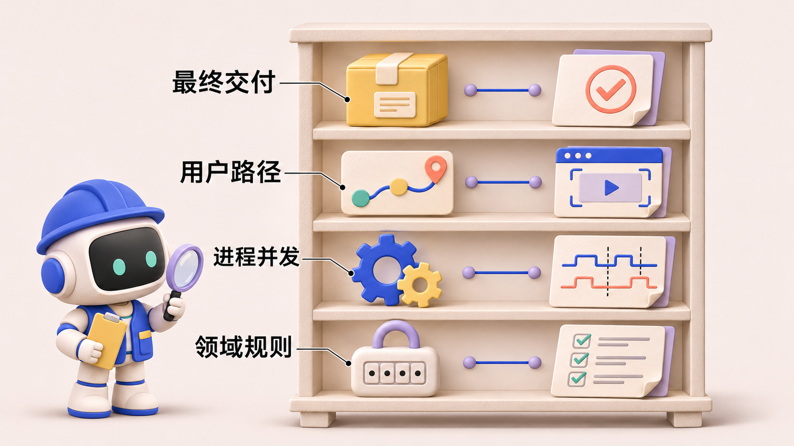
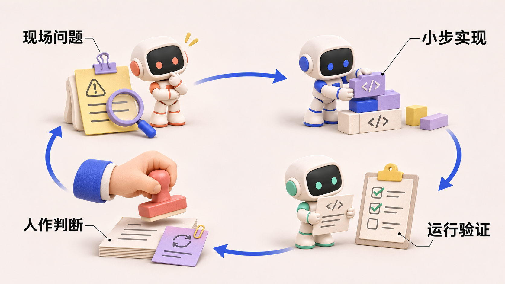

第 2 篇 第 3 篇 第 4 篇 第 5 篇 第 6 篇 第 7 篇 第 8 篇 第 2 篇
一个 Agent 到底是谁：身份、角色、名字与上下文的四种边界
agent-center 是一个组织多个 AI Agent 协作完成软件开发任务的系统。Agent 在其中接收目标、调用工具，参与实现、检查与交付。《Agent 协作手记》以这个项目的开发和运行记录为线索，讨论各模块的设计选择、实现效果，以及实践中暴露的问题。
Agent 协作手记 · 第 2 篇
一、需求动机
项目有过这样一段规则整理记录：一名被称为 PD 的成员准备把经验提案发布成团队正式规则，第一步却收到 not_memory_curator。它在消息中说明，当前账号可以读取和提交提案，但不能批准或拒绝提案，因此没有继续改动提案状态，而是请求由具备权限的账号处理，或为自己补充授权。治理权限案例：研究工作稿 P3 §4.2
这里的 Curator 指被授权管理团队规则的主体。PD 是团队使用的职责称呼，却不自动包含这项权限。后续记录中出现了同一身份的 Curator 授权行和提案处理报告；这与“治理权需要单独授权”的解释一致，但不能仅凭这几条记录重建所有授权变更。
这次拒绝不是系统认不出成员，也不该为了让工作继续就取消检查。它把平时容易混在一起的几件事分开了：名字帮助人辨认成员，身份让系统持续识别同一主体，角色描述职责，权限决定具体操作是否允许。一个成员被称作什么，与它实际获准做什么，需要分别核对。
同样的区别也存在于改名和重启中。显示名可以变化，运行进程也可以更换，历史任务仍应关联到原来的业务身份；反过来，知道“这是同一个人”，也不能推导出它有权处理所有项目或所有治理操作。
即使身份和权限都处理正确，成员也可能无法完成任务。例如测试 Agent 有权验收，却只拿到了上一版代码的测试报告。它缺的是本轮判断所需的材料。本文把模型本次作出判断时实际能看到的任务说明、消息、文件和检查记录称为“上下文”。拥有身份和权限，不等于已经获得充分的上下文。
这篇文章围绕这几种容易混用的概念展开：系统怎样让成员保持稳定身份，怎样把名字、职责和权限分开，以及怎样为具体决策提供相关材料。后面的实现与实验会分别检查这些目标，避免用“像一个团队成员”笼统代替可验证的要求。
二、方案选择
这里有两类不同的选择。工程上，需要决定身份、组织关系和执行配置怎样关联；交互上，我们也曾期待稳定的个人名字能增强团队感，甚至改善协作。后一种期待需要独立检验，不能用来替代身份和授权设计。
任务要在 Agent 改名、重启、转派之后仍能查到负责人。把显示名当作任务键，改一个名字就会牵连历史记录。用临时进程标识也不合适，重启后进程会更换。系统因此保留稳定的业务身份，把组织角色和执行配置分别记录。这样做增加了一次身份映射，却让成员可以换配置、保留历史，并按组织关系接受权限检查。
当前代码里至少有三层容易被统称为“Agent 身份”的对象。Identity 是用户或 Agent 的账户身份，带稳定 ID、种类、展示名和账户状态；Member 是 Identity 与 Organization 的成员关系，带角色和状态；执行侧的 Agent 聚合带 Profile（运行配置）、Worker（承载执行的工作节点）绑定、生命周期与身份关联。Task 的 assignee 则是任务面向某个 actor 的引用。代码：Identity · 代码：Member · 代码：Agent · 代码：Task
图 1：边界示意。四项分别回答识别、授权、执行与判断材料的问题，不能互相替代。
这些边界需要分别记录。成员关系可以变化，执行 Agent 可以停止或换配置，展示名可以编辑，任务归属可以转移；稳定身份不应该随着任何一个变化而丢失。运行时还需要把任务 assignee 的引用与自己识别的 Agent 身份对齐，否则错误的临时执行请求（fork）可能让 A 为 B 的任务启动 Executor，也就是受委派做具体工作的临时执行者。当前 fork 入口有这道防误派检查。代码：身份匹配防护
一个字段名就能制造误解：IdentityMemberID 指的究竟是谁
当前 Agent 的 identityMemberID 很容易被读成 Member 行的主键。但字段旁的注释明确说明，它保存的是 identity-member 的 Identity ID，也就是 agent-... 这样的身份 ID。这说明统一语言不能只停在文档：同一个字段的名字、注释、DTO 和调用者的比较方式都需要一致。Agent 身份关联字段
运行时的 identityRef() 也值得读。它优先使用中心投影的 agentRef，缺失时退回配置里的 AgentID；而 Task.assignee 使用自己的 actor ref 命名空间。fork 入口的修订注释明确提醒，直接拿执行 Agent 的 ULID 比较 assignee，会把正常分派也判成已转派。运行时身份引用 · 跨命名空间防护
这不是术语洁癖。身份混用会直接改变谁可以启动任务。更危险的是，它可能表现成“所有任务都没启动”，看起来像调度故障，实际却是不同 ID 空间的字符串比较。我的建议是把转换集中在显式的边界适配里，让日志同时记录执行 Agent ID 与业务 actor ref，并继续减少容易误读的命名。这个建议针对现有复杂度，不等于宣布当前每条兼容路径都能立即移除。
概念
主要回答
可以改变的内容
不应该替代它的东西
Identity
谁在行动
展示信息、账户状态
Profile.name
Member
在哪个组织、有什么成员角色
角色与成员状态
“Tester”这样的自由文本标签
执行 Agent
由什么配置与运行环境承接
Profile、生命周期
一个临时 Executor ID
Task.assignee
谁承担这项任务
显式重新分配
对话中的自称
上下文视图
此次判断可用哪些事实
范围、版本与候选筛选
同角色成员的全部历史
上下文边界比角色标签更难
假设负责测试的 Tester 要判断一版候选代码是否可交付。它需要看到需求、当前候选、相关修改、适用检查和旧回执为何失效。它们可能由不同角色生成。若系统按“只读同角色材料”供给上下文，Tester 会缺关键信息；若把整个团队历史原样塞入，又会遇到噪声、过期结论和权限问题。合理的选择单位应该是当前决策需要什么证据 ，再受身份和权限约束，而不是凭写入者的角色决定读者能否看见。
这也解释了为何“共享上下文”不是“共享一段大 prompt”。上下文必须有来源、版本和适用范围。当前系统的 Task、Conversation 和分层 Memory 为不同来源提供存储与引用，但如何拼出每个决策所需的最小充分证据，仍是设计与评估问题。代码：Conversation · 代码：Memory 作用域
示例 · 同角色的旧证据，跨角色的新证据。 验收者手里有两份报告，一份是另一位 Tester 为候选 A 签发的通过回执，一份是开发者为当前候选 B 运行检查所得的失败记录。如果只取同角色历史，界面会留下一份看似可信的绿色报告。按当前候选和权限取材料，验收者则有理由拒绝 B，并说明具体失败项。这里仍须核对检查是否覆盖合同，只换筛选顺序不会赋予任何人额外验收权。
图 2：说明性情境。旧候选的通过报告不能遮蔽当前候选的失败记录；正文用 A、B 区分两个候选，筛选步骤是设计建议。
三、实现效果
固定机器身份后，名字和材料分别改变了什么
项目关于命名、角色与共享上下文的研究工作稿（编号 P3）把这些问题拆开：固定机器 ID 和权限，比较不同命名条件下的验收决策；另外比较不同上下文选择策略。其受控决策中，个人名的有无没有改变验收动作；当信息只按同角色来源提供时，8 类情境仅有 2 类具备必要信息。结论限于这些任务与材料，不能推出名字对长期团队体验没有价值。研究工作稿 P3
图 3：依据 P3 表 7 重绘，展示材料的可判定上限。个人历史有一个情境可以仅凭当前失败拒绝，因此“足以处置 3/8”不等于“两项必要事实齐全 3/8”。
把两种问题分开计分，才能读懂上下文实验。验收者拿到旧候选的绿色回执时，请求补证是正确动作。用“回答合规”评分，它可以得满分。用“现在能否完成本轮验收”评分，它一次也没有判定当前候选。这两种结果可以同时成立。产品若只监测模型回答正确率，材料筛选造成的额外等待就会完全消失在报表里。
接收者看到的材料
当前可以采取的行动
系统还欠接收者什么
当前候选、匹配的合同和通过回执
在其授权范围内接受候选
保存判断所依据的版本
当前候选有匹配的失败证据
拒绝并指出缺口
将修复义务交回负责人
只有上一候选的回执
请求当前凭据
找到可授权读取的证据或安排检查
表中是按验收条件推演的三个场景。如果最后一行经常发生，优先检查材料是被权限限制、被角色筛选排除，还是压根没产生。这三类故障分别需要授权、检索和执行方面的修改。
名字变了，判断却没有跟着变
在论文的短情境实验中，全部获准记录和当前范围记录都能支持 8/8 类情境，两模型直接处置也都为 32/32。前者包含七条记录，后者三条。这个结果说明，当前范围筛选能减少材料；却没有证据表明它提高了这组任务的正确率。不能看到过滤器更精巧，就把它写成效果更好。P3 表 7
另一个更干净的对照固定机器 ID 和权限，只改变展示字段：缺省个人名、个人名、角色标签。三组拿到当前候选的跨角色凭据时，都是四次通过、四次拒绝；只拿到旧候选的同角色凭据时，都是八次请求补证。这里没有“人名增强团队协作”的效果，也没有“人名使模型犯错”的效果；真正改变能否直接判定的是凭据是否对应当前候选。
展示字段
仅有旧候选凭据
有当前候选凭据
无个人名
8 次请求补证
4 次通过、4 次拒绝
个人名
8 次请求补证
4 次通过、4 次拒绝
角色标签
8 次请求补证
4 次通过、4 次拒绝
表 2：P3 的 48 次首步处置。请求补证是合规动作，不应该为凑出差异被计作错误。我的产品判断据此收窄：名字应作为可用性和团队体验功能，而不应拿来论证权限或交付收益。
四、总结反思
稳定身份让任务归属可追踪，可读名字帮助操作者找到成员，这两项设计有各自的用途。走偏的地方是又期待命名解决跨会话的信息不足。验收者缺的是当前候选的证据，改名字不会补齐它。
从眼前这项验收，往回找需要的材料
以 Tester 验收为例，我会按下面的顺序取材料：先明确当前 Task 和候选，再读取适用合同与当前凭据，随后补充解释缺口所需的跨角色记录，最后才读较远的历史经验。每条材料仍需遵守权限；“与任务相关”不是绕过权限的理由。同角色可以作为检索线索，但不能成为硬过滤条件。
这个顺序还有一个工程好处：当判定失败时，可以说清楚是缺了候选、合同、凭据，还是材料过期。相比“给它更多上下文”这样的宽泛处方，这种缺口更容易补，也更容易做针对性测试。需要防止的不是跨角色读取本身，而是没有来源、没有版本、没有适用范围的事实混合。
再遇到“它是谁”，需要把问题问得更具体
写设计文档或排查故障时，我会要求一句话明确它谈的是哪一个层次：稳定 Identity、组织 Member 角色、执行 Agent 的进程和配置、还是当前任务上下文。再问两个不同问题：谁被授权行动？它拿到了哪些足以行动的材料？只有把两者分开，才能看清“角色看起来对，结果仍然错”的失败。
回到那个叫“后端小张”的成员，它仍然可以有一个容易记住的名字。但任务转派时要查稳定身份，执行操作时要查权限，判断交付时要查当前证据。这几件事分别有了依据，名字才可以安心承担它自己的用途：让人更容易辨认和交流。 下一篇会沿着证据继续往下，看看计划调整以后，已有成果是否也被带到了下一步。
第 3 篇
Supervisor–Executor：并行、模型选择与责任交接，为什么没有同时做好？
agent-center 是一个组织多个 AI Agent 协作完成软件开发任务的系统。Agent 在其中接收目标、调用工具，参与实现、检查与交付。《Agent 协作手记》以这个项目的开发和运行记录为线索，讨论各模块的设计选择、实现效果，以及实践中暴露的问题。
Agent 协作手记 · 第 3 篇
一、需求动机
一次部署记录中，任务已经恢复为“进行中”，负责它的 Agent 却发现没有任何临时执行在工作。它看见了这个缺口，但给出的解释是：需要中心修复调度。随后，任务又被标记为阻塞。
用户纠正的恰好是下一步该由谁来做：临时执行应由这个 Agent 内部负责协调的 Supervisor 创建。Agent 随后修改了解释，并报告已显式调用创建执行的工具。这里的 Supervisor 是常驻协调部分，Executor 是按需创建的临时执行部分；两者共同构成对外承接任务的同一个 Agent。执行分开了，未完成目标的责任并没有转给平台。现场记录与时间线：研究工作稿 P1 §4.2
这段材料还不能写成“提醒后就修好了”。原生任务日志可以确认恢复、阻塞等状态变化，创建执行和后续推送则仍是参与者报告；同一任务后来还因交付要求没有补齐而阻塞。它让我们看清的，是发现无人执行与主动承接下一步之间，仍可能断开 。
之所以要把一个 Agent 拆成这两部分，首先是为了让长任务不占住它接收消息和安排工作的能力。底层的 Claude Code、Codex 等编程工具可以通过命令行运行，下文简称 CLI。把具体工作交给隔离执行，可以让常驻部分继续协调；但新执行替谁工作、结果交给谁、失败后谁继续处理，也必须一起规定。
另一个约束来自成本。检查一处配置与重构一个复杂模块，对模型能力的要求不同。如果全部沿用同一个模型，简单工作可能付出不必要的费用；如果一律选便宜模型，困难工作又可能因失败和返工变得更贵。我们希望每次派出具体工作时，都能选择适合它的执行工具和模型，在交付质量与总成本之间作出判断。
因此，这个模块需要同时解决三件事：让一个团队成员可以安排多项工作，为不同任务选择执行模型，并在临时执行结束后保持责任连续。拆开进程只是实现手段；用户关心的是任务是否有人接着做，以及最终交付花了多少代价。
二、方案选择
早期一个 Agent 往往对应一条持续的命令行会话。为满足并行处理和模型选择的需求，需要重新安排“接收与协调”和“具体执行”之间的关系。项目采用的两个名称是 Supervisor（负责接收消息、安排工作并跟进结果的常驻控制者）和 Executor（受委派完成具体工作的临时执行者）。
一种做法是让常驻会话顺序处理全部工作。上下文连续，用户也知道找谁，但长任务会占住会话，每个任务沿用同一执行模型。另一种做法是把每个子任务都交给独立的团队成员。这样能并行，却要反复建立任务归属、汇集上下文和交回结果。Agent Center 选择在同一逻辑 Agent 下委派临时执行。对外承接任务的仍是同一个 Agent，Supervisor 与 Executor 是它内部的运行分工；创建 Executor 不意味着团队里新增一位成员。运行时在每次创建临时执行（下文沿用代码称作 fork）时，解析执行器的 CLI 和模型。
这个选择把两个原本绑在一起的决定分开了。Supervisor 根据任务性质决定要不要委派。确定委派后，路由器根据任务指定、允许的候选和默认配置决定用谁执行。前者错了会造成不必要的交接，后者错了会造成过高费用或返工，两种代价需要分别观察。
当前执行链路
先看图中最外层的边界：整个框才是团队中的一个 Agent，机器人头像代表这个整体。框内的 Supervisor 负责协调和判断，Executor 是按需创建的执行单元，可以针对不同工作选择不同模型。图中画出两个 Executor，是为了说明同一 Agent 内部可以有多个临时执行，并不代表三个独立 Agent 在协作。
图 1：同一个逻辑 Agent 内部的运行分工。蓝色路径表示委派与模型选择，紫色路径表示执行结果回到 Supervisor 后继续判断；对外的身份与任务责任始终属于同一个 Agent。外框表示逻辑归属，不表示共享一个进程或同一份上下文。两个 Executor 及模型 A/B 均为示意，不是固定数量或绑定关系。
具体到调用链路，work_available 是有任务可处理的通知，只把任务提示注入 Supervisor，不直接 fork。代码里的提示要求它先检查任务，再选择内联处理或通过 fork_executor 请求创建临时执行，并且在判断结果之前不要完成任务。代码：Supervisor 唤醒 这是设计上的责任分工，不是结果自动成立的保证。
进程边界也是真实的：在 Claude 的生产适配路径中，管理执行进程的后台服务 Worker daemon 持有 SupervisorSession，而 Supervisor 拥有 Claude 进程；daemon 停止时可以断开连接（detach），之后再连接。Executor 则有独立的运行句柄和并发池。另一个需要明确标注的状态是：ADR-0056 已接受“稳定 Executor Slot 与唯一 Execution Run ID 分开”的设计，但本次核对的 executor.Pool 仍通过 active map 管理并发，没有看到相应的 slot_index 分配与恢复实现。不能把 Accepted 文档写成已经落地的功能。代码：SupervisorSession · 代码：当前 Pool · ADR-0056
图 2：依据 ResolveExecutor 函数体概括选择优先级，具体条件见正文；智能判断默认关闭。函数头部注释对默认模型与候选池的先后概括并不完全一致，这里以可执行分支为准。
模型路由到底怎么选
当前 Agent Profile 可配置 orchestrator_model、default_executor_model、最大并发数以及候选 {CLI, model}。路由优先级可以概括为：Task 明确指定模型时先尊重任务；否则如果启用了难度判断，并且存在候选池，就让判断器选一个候选；判断无效时退回显式默认模型或确定性的候选；再没有合适配置才报告无法解析。选中的不仅是模型名，还有实际运行的 CLI。代码：配置 · 代码：路由顺序
难度判断的提示会读取任务目标，以及候选的能力层级、输入/输出价格和上下文窗口，要求选“能完成任务的最便宜模型”。但这个 LLM 判断开关默认关闭；即使开启，缺少可解析的 orchestrator model 时也会退回确定性路径并记录警告。代码：判断输入 · 代码：启用条件
这就带来至少三个实验问题。第一，判断器的额外调用成本能否被便宜 Executor 节约的费用抵消？第二，误把困难任务交给便宜模型后产生的返工是否吃掉收益？第三，候选模型价格和能力注释是否及时、完整？没有把这些因素纳入同一任务集的对照，我们只能说系统实现了选择机制，不能说成本和效果已经达到最优。
同一个 Agent，也有彼此看不见的部分
首先是身份边界：对团队来说，目标仍分配给同一个 Agent。其次是进程边界：Supervisor 和 Executor 有不同的生命周期、目录和恢复动作。最后是知识边界：Executor 看到的任务包与 Supervisor 的长期会话并不相同。代码上的父子关联只能解决前两层的一部分；它不会自动让 Supervisor 知道某个文件、测试或失败解释。
因此“临时执行者是你的一部分”不是完整的协议。临时执行者结束时，必须告诉当前控制者：产物在哪里、对应哪个版本、验收要求还差什么、当前有哪些资源可用、它获准怎么继续。否则 Supervisor 可能既承认目标属于自己，又缺少下一步所需的证据；也可能具有行动权，却因旧说明误以为应等中心。两种情况要用日志区分，不能一律诊断成身份混淆。
算例 · 便宜模型何时反而更贵？ 假设在同一验收标准下，直接使用强模型完成一项工作花 10 个成本单位。智能路由先花 1 个单位判断，再花 4 个单位执行。如果首次尝试未通过，就另花 10 个单位重做。设重做概率为 p，两种策略的期望成本分别为 10 和 5 + 10p。当 p 达到 50%，首次调用的价格优势被完全吃掉。如果重做还需要人工重建上下文，临界点会更低。这些数字是说明用假设，项目需要实测的正是不同任务类型的 p、重做费用和终验通过率。

图 3：正文假设的成本曲线，非项目测量。重做概率达到 50% 时，本算例中两种策略的期望成本持平。
三、实现效果
更难的是：Executor 退出之后，谁继续负责？
进程成功隔离，目标责任却未必自动连续。项目中的一篇论文工作稿重建了这样一类现场问题：Supervisor 识别出 Executor 失败，却把后续修复和交付理解成外部责任，需要人工提醒才继续。论文也保留了后期正确承责的反例，因此不能简单归因于“Supervisor–Executor 架构必然失效”。它提出的更精确问题是：一次临时执行的结束，是否在模型看来变成了目标义务的结束？研究工作稿 P1
代码可以保证某个 Executor 属于某个 Agent，可以检查任务 assignee 与运行时身份是否匹配，可以保存运行记录；这些都不能替代 Supervisor 对“还差什么才能交付”的判断。相反，判断必须依赖可见的候选成果、验收缺口、失败原因和允许的恢复动作。路由决策与责任交接也应一起观察：昂贵模型完成得更好，若结果无法被 Supervisor 正确接住，端到端成本仍可能更高。
图 4：直接引用 P1 工作稿原图。原生任务动作、用户纠正和 Agent 报告属于不同证据层；fork 报告并不等于已经取回的执行控制事件，后续仍存在合同缺口。
这组现场材料很重要，但论文中的反证同样重要：在另一组短函数任务里，两种身份表述各 12/12 自主交付。说明“统一身份”并非必然导致责任外置；它也没有证明长程任务里只靠身份提示就足够。P1 §4.8 我选择的工程方向是把责任留在数据和反馈中持续呈现，而不是寄希望于给角色换一个更好的名字。
从“准备重试”到真正交付，还有一段距离
P1 还在同一个可恢复开场后比较了三种干预。12 个可恢复开场都表达了重新分派的意图，真正执行分派的是 10 个。复制相同的开场状态后，各组分别得到中性唤醒、一次操作者式提醒或持续的系统责任记录。这样可以在候选和工具权限相同的条件下观察交回责任的作用。P1 案例重建
从同一开场继续
得到合格候选
正式通过验收
中性唤醒
10/12
8/12
操作者式提醒
10/12
9/12
系统记录并交回责任
10/12
9/12
为什么同时保留两列？有合格候选，说明执行器已经交出能通过检查的成果。完成验收还要求控制者在预算内找到候选、检查它并作出终态判断。三组的第一列相同，第二列也没有显示持续记录优于一次提醒。因此我会把系统记录用于恢复可追溯性。至于它能减少多少人工干预、智能路由能省多少费用，这两个问题分别需要长期恢复记录和同任务的路由成本对照。
四、总结反思
保留常驻控制者和按任务选择模型的入口。此前设计低估了结果交回的难度，Supervisor 即使知道运行失败，也可能缺少当前候选、验收缺口和可执行的恢复动作。下一轮评估应把每次回退的原因、重做的费用和最终交付关联到同一任务。
把返工算进去，再看模型是否便宜
“选最便宜的模型”如果没有“能完成任务”这个前提，几乎没有意义。一个廉价 Executor 三次返工，再加 Supervisor 的复核、恢复和人工提示，可能比一次较强模型更贵。因此成本目标应该按交付任务统计，而不是按单次调用统计：
每个验收通过任务的成本 =（判断调用 + 全部执行尝试 + 复核与恢复 + 可计量的人工介入成本）÷ 验收通过任务数。
这是建议采用的评价口径，不是已经测得的节约结果。若失败任务的费用从分子里删除，便宜策略会被高估；若只比较成功样本的 token 单价，同样会隐藏返工。质量约束也必须固定：同样的验收合同、同样的测试集合、同样的交付终点，才有资格比较哪条路由更经济。
当前 Judge 主要读取任务标题与描述，以及候选的 tier、价格和上下文窗口。它并不天然知道未来要改多少文件、隐藏测试难度或仓库中有哪些陷阱。一个描述简短的任务可能有很高的调查成本。我支持任务级智能路由，但不支持把一次难度判断当作可靠的全程难度估计。 后续应检验能否在执行中根据失败证据升级模型，并把升级开销纳入总成本；这属于待验证的改进方向。
路由策略
它解决的问题
容易付出的代价
应比较的结果
固定强模型
减少初始低估
简单任务也支付高价
总成本、交付率、延迟
固定便宜模型
控制首次调用费用
困难任务反复返工
重试与升级后的总成本
一次 Judge 选择
根据任务差异分配模型
判断本身有成本，也可能误判
与固定策略的逐任务配对差
根据失败证据升级
初始低成本并保留纠错机会
升级过晚、上下文重复
最终成本及升级前浪费
这张表不是现有系统的 benchmark 排名。它给出了我们应当做、但不能用架构图代替的实验。尤其要把确定性回退单列：开关没开、Judge 不可用、Judge 越界、显式默认模型生效，都是不同来源；若日志只记最后用了哪个 model，就无法知道“智能路由”到底贡献了什么。代码已有 task_override、llm_judged、default_fallback、pool_fallback 等来源，应该用它们审计真实运行比例。路由决策类型
这些失败并没有让我放弃 Supervisor–Executor 的分工。并行执行和按任务选模型仍有必要，只是评估不能停在“这个 Executor 跑完了”。要看的是同一个目标最终是否交付，以及为了交付一共付出了多少成本。 把返工、恢复和人工提醒也放回这笔账里，才能判断模型选得是否合适，Supervisor 是否接住了剩下的工作。
第 4 篇
任务究竟归谁管：从 AgentWorkItem 到 Task 的模型收敛
agent-center 是一个组织多个 AI Agent 协作完成软件开发任务的系统。Agent 在其中接收目标、调用工具，参与实现、检查与交付。《Agent 协作手记》以这个项目的开发和运行记录为线索，讨论各模块的设计选择、实现效果，以及实践中暴露的问题。
Agent 协作手记 · 第 4 篇
一、需求动机
项目早期有过一次很容易让人误判的恢复失败。计划页面里，一项工作显示为“暂停”；操作者点击恢复，页面却只让他重试。任务还在，按钮也在，但界面没有告诉他：究竟是任务坏了，还是现在不能继续。
设计记录保留了排查结果：承接这项工作的 Agent 暂停它以后，已经转去处理另一项工作。当时系统约定，一个 Agent 同时只能有一条活跃工作项，因此后端拒绝了恢复请求，返回“Agent 正忙”的错误。前端把这个具体原因抹掉了，只留下笼统提示。这是记录为 T101 的实际问题；修复选择保留并发约束，改为向用户解释为何无法立即恢复。恢复失败记录：ADR-0048
这件事暴露出一个容易被“任务状态”四个字遮住的区别：业务工作尚未完成，承接它的 Agent 却可能已经暂停处理。 用户需要知道工作还归谁管、为什么停下、怎样继续。理解这几个问题，才能看懂当初为什么既有业务任务，又为 Agent 增加了一层工作记录。
在一次简短的人机对话里，这些信息通常隐含在聊天上下文中。你提出要求，Agent 开始处理，遇到困难再问你。只要一直盯着对话，就大致知道它在做什么。但当多个 Agent 同时承担不同的工作，一项任务又可能经历等待、暂停和转派时，系统就需要把这些事实明确记录下来。否则，用户看到“进行中”，仍然不知道工作是在推进、等回复，还是已经无人接手。
一项工作，从交出去到完成会经历什么
用一个示例来看这件事。用户提出：“修复登录超时，并补上回归测试。”为了跟踪这项工作，系统需要一条稳定的任务记录，保存目标、负责人和业务状态。下文把这种业务任务称为 Task。无论后面换了谁来处理，大家都应该能找到同一项任务，接着原来的目标和讨论继续工作。
假设任务先交给 Agent A。A 开始调查，发现缺少复现条件，于是向用户提问；用户回复后，A 继续处理。期间也可能出现更紧急的故障，A 需要暂停手头的工作，稍后再回来。如果 A 最终无法完成，负责人还可能把这项任务转给 Agent B。接手者提交修复和回归测试后，还要核对登录故障是否确实消除；验收通过，这项工作才算完成。
图 1：沿着“修复登录超时”这个示例看工作如何流转。上方始终是同一项任务，下方是处理者及处理状态的变化；等待和暂停结束后可以继续，必要时才转派给 B。这是一条包含转派的示例路径，并非每项任务都必须换人，也不是系统的完整状态机。
这些变化没有改变任务的目标，却改变了 Agent 处理它的方式。项目管理需要知道“登录故障是否修复、现在由谁负责”；Agent 一侧还需要记录更细的工作状态：
A 的工作队列里有哪些事项，当前哪一项占着处理槽位？
A 是正在处理、等待回复，还是主动暂停？等待结束后应恢复哪条工作记录？
任务转给 B 后，怎样结束 A 的承接关系，并保留 A 曾经处理过的历史？
单靠任务上的一个“进行中”，无法表达这些差别。任务可能还没完成，但 A 已经停下来等待；任务也可能仍在推进，只是处理者从 A 换成了 B。业务工作的进展与某个 Agent 的处理状态，需要分别描述。
把这些场景放在一起，任务管理至少要满足四项要求：
用户需要知道的事
系统必须保留的事实
换人后，原来的工作还在不在
稳定的任务目标、编号和讨论记录
现在由谁继续处理
当前分配关系，以及过去转派的历史
为什么还没有完成
正在处理、等待信息、暂停或失败等原因
等待结束后怎样继续
可以明确定位的待处理工作与恢复入口
这些需求还没有规定数据应放在哪个对象里。接下来的设计选择，是怎样组织这些事实，让项目负责人和执行工作的 Agent 都能得到所需的信息。
二、方案选择
起初，我们把两种进度分开记录
早期设计把 Task 放在项目管理模块 ProjectManager 中，保存业务目标和任务归属；同时为 Agent 一侧增加了一种工作记录，叫作 AgentWorkItem，下文简称 WorkItem。任务分配给某个 Agent 时，系统为它创建一条工作项，记录排队、处理、等待等状态；同一 Agent 等到回复后，可以继续原工作项。任务转派时，旧 Agent 的工作项结束，新 Agent 获得另一条工作项，业务任务本身则保留下来。
Task 表示要完成的业务工作；AgentWorkItem 表示某个 Agent 承接这项工作后的一段逻辑处理过程。 前者跟着工作目标走，后者跟着一次分配关系走。这是当时拆出两个模型的出发点：项目管理保留稳定的业务记录，Agent 一侧可以单独表达处理过程。两者的具体职责如下。
Task 与 AgentWorkItem 究竟有什么区别
比较项
Task：业务任务
AgentWorkItem：Agent 的逻辑工作项
核心问题
什么工作需要完成，目前归谁负责？
某个 Agent 如何处理分配给它的这项工作？
所属领域
ProjectManager
Agent
身份的连续性
转派后保留原 Task ID
转派时旧项结束，新负责人得到新项
与对方的关系
作为被引用的业务对象持续存在
通过 taskRef 引用 Task，不拥有 Task 的业务状态
典型信息
任务目标、业务状态、指派关系
agentID、taskRef、工作项状态、交互计数
等待与恢复
业务任务仍可处于进行中
active → waiting_input → active，同一项继续处理
历史组织
保持任务及其稳定的 Conversation（任务对话记录）
通过工作项引用和交互引用组织活动事件
这张表描述的是历史模型的职责划分 。AgentWorkItem 引入于 2026 年 5 月 29 日的提交，提交说明明确写出：它引用 Task，但不拥有 Task 状态；一次 WorkItem 可以包含多轮 AgentInteraction（逻辑交互）。代码也明确强调，它不是进程或一次运行。因此，“重启一次进程就新建一个 WorkItem”“一次模型调用就是一个 WorkItem”，都不符合当时的定义。引入提交 · 删除前的模型源码

图 2：历史模型示意。中间的任务档案对应 Task，两侧的工作记录对应先后承接任务的 AgentWorkItem；转派会留下历史记录，图中不表示同时由两个 Agent 执行。
用前面的登录故障举例，关系可以展开成下面这条时间线：
时刻
业务上发生的事
Agent 侧发生的事
t₀
创建任务 T，指派给 A
创建 W-A，进入 queued
t₁
A 开始推进 T
W-A 进入 active
t₂
等待用户补充复现信息
W-A 进入 waiting_input
t₃
用户回复，继续处理 T
同一 W-A 回到 active，交互计数增加
t₄
T 转派给 B，任务和对话保留
W-A 进入 superseded，创建 W-B
这里保留了两个有用的区别：任务没有结束，不代表原 Agent 的承接关系仍然有效；一次等待结束，也不代表开始了一项新任务。 如果把 WorkItem 一开始就当作 Task 的多余副本，就无法解释这两个需求。
状态不同，什么时候是合理的
后来加入的暂停能力提供了一个更具体的例子。旧实现允许 Agent 把工作项从 active 改成 paused，释放单活跃槽，也就是不再占用该 Agent 同时只能处理一项工作的名额，去处理另一项工作。原 Task 仍为 running，用于组织任务依赖的 Plan（计划）页面则根据 Task 与 WorkItem 的组合，把节点显示为暂停。这种差异有明确含义：任务还在进行，Agent 暂时不处理它。
架构决策记录 ADR-0048 记录过一次真实问题：用户在 Plan 页面恢复暂停节点时，Agent 正忙于另一条工作项，后端按单活跃约束返回 409 agent_busy，前端却显示笼统的“请重试”。这个问题不是两份状态必须相同，而是界面没有解释清楚恢复受什么约束。修复保留了该约束，改为展示准确原因。暂停与恢复决策记录
所以，这次复盘真正要问的是：业务生命周期与 Agent 处理生命周期需要区分，但是否值得为后者长期维护一个独立、可写、需要与 Task 同步的领域对象？
两边的记录，渐渐需要更多照应
旧实现用事件投影连接两端：一端发生变化并留下事件，另一端根据事件更新自己的记录。具体来说，Task 分配或转派后，pm-workitem-sync 创建新工作项，并在转派时取代旧项；反过来，pm-task-status-sync 消费工作项状态变化，工作项激活时尝试启动 Task，失败时尝试阻塞 Task。后者名称中的“同步”，已经说明它不只是一个供页面查看的历史投影，而是参与了业务状态推进。Task → WorkItem 投影 · WorkItem → Task 投影

图 3：历史实现的两条同步方向。任务分配与工作状态分别推动另一侧更新；Task 完成时，不同工作项状态还需要不同收尾动作，具体映射见正文。
这些投影并非毫无防护：代码把投影效果与事件已应用标记放在同一事务里，避免重复消费反复改变状态。但幂等只能回答“同一事件再来一遍怎么办”，不能替我们定义两个状态机之间的全部业务映射。
一个具体细节足以说明维护负担：Task 完成后，处于 active 的工作项可以转成 done；如果工作项还在 queued 或 waiting_input，投影却要把它转成 canceled，因为这些状态没有直接到 done 的合法边。同一个“任务完成”，需要根据另一端所处状态选择不同的收尾动作。单独看两个状态机都说得通，组合起来就增加了必须解释、测试和观测的分支。
问题不在于两个状态值不相等，而在于一次业务动作越来越需要协调两个可写状态机。 转派要处理旧项与新项，完成要选择合法收尾路径，失败还要回写 Task。维护成本来自这些关联规则，而不只是多了一张表。
再看这层工作项，还有多少职责需要独立保留
沿着这些维护问题，可以比较三条调整路线。下表是依据历史实现和最终改动所作的复盘，不把它当作当时逐项讨论过的会议记录。
路线
需要承担的工作
主要取舍
保留两个独立状态机
继续维护转派、完成、失败与恢复的映射，补齐同步诊断
保留 Agent 侧的独立处理模型，也保留跨模型协调成本
把工作项改成只读视图
从 Task 和活动记录计算队列与历史，取消工作项独立写入
可以保留展示形式，但原有暂停与恢复规则仍需重新安排归属
撤销工作项模型，职责重新归位
Task 接回分配、阻塞、租约和动作历史，运行层继续记录执行事实
减少双向同步，同时扩大 Task 的职责，要求重新核对读取与恢复路径
对这个项目而言，关键判断是：工作项提供的排队、承接历史和恢复信息，是否仍需要通过一个独立状态机来管理。转派和终态处理已经强依赖 Task，继续维护双向映射就需要持续付出成本。最终实现沿第三条路线收敛，把工作管理集中到 Task，并保留运行层自己的执行记录。
工作管理回到了 Task
现在的选择是让两端从同一个 Task 得到各自的答案。按负责人查询保留所有活跃分配，再叠加依赖和状态检查，才得到 Agent 的可执行清单。这个选择省掉了同步两份生命周期的工作，代价是每次判断可执行性都要读到足够的计划信息。
2026 年 6 月 23 日的删除提交记录了这次收敛：前序改动已经把阻塞、租约和动作日志归到 Task，最终移除了 WorkItem 模型、仓储和两个同步投影，并让相关读取转向 Task。可执行性门禁与 Agent 活动事件仍然保留。删除的是这层独立工作项的生命周期管理，不是取消任务与运行事实的区别。删除提交及迁移范围
当前运行层把接收任务、安排工作和跟进结果的常驻控制者称为 Supervisor，把临时派出的具体执行者称为 Executor。图中的 fork 指创建一次这样的临时执行；它与业务任务被标记为“进行中”是两个需要分别记录的动作。

图 4：业务记录、启动门禁、实际执行和结果验收的机制概括。箭头表示需要逐段核对的处理关系；拥有任务记录，并不证明后续阶段已经发生。
一张图看当前边界
补充架构图 · Mermaid 源码 flowchart LR
Human[用户 / Plan / 分配器] --> PM[ProjectManager · Task]
PM -->|Task assignee + 可执行性判断| Wake[work_available]
PM -->|list_my_tasks / start_task| Agent[Agent Runtime]
Wake --> Agent
Agent -->|开始、阻塞、完成、租约续期| PM
PM --> Log[TaskActionLog]
图中的 Task 是业务事实：标题、描述、状态、assignee、Plan 关联、阻塞原因、执行租约和动作记录都在它身上。Agent 聚合记录另一些事实：配置、Worker 绑定、生命周期、能力标签。把两者混成一个“Agent 的任务状态”，就会在失败恢复时丢掉边界。代码：Task 字段 · 代码：Agent 字段
三、实现效果
这次调整可直接核对的效果，是工作项模型及其两个双向同步投影被移除，读取与状态推进改走 Task。下面用转派、任务列表和故障记录检查行为上的变化。这里没有模型收敛前后的吞吐量或故障率对照，因而不据此宣称系统变快了，或恢复成功率提高了。
转派：同一任务上的责任与历史如何变化
转派时，代码究竟少同步了什么？ 看一次从 A 到 B 的合法转派就很清楚。当前 RecordReassignment 先尝试改变指派，成功后清掉旧阻塞说明、阻塞类型和备注，同时清空执行租约，追加包含操作人与新负责人信息的转派记录。原任务的 ID 保留下来，B 不会接到一张还要求它替 A 续租的工作单，排障者也能追溯负责人何时变更。这里得到的是一个可检查的业务结果。旧进程是否已经退出，则要另看运行记录。转派实现
同一次转派
原因
保留旧值的具体后果
更新 assignee
下一次拉取要找到新负责人
B 看不到归自己的工作
清理阻塞说明与租约
先前的等待和续租属于前一次执行
接收者看到已经过期的恢复条件
追加转派记录
区分“当前归谁”与“谁改变了归属”
历史只能根据当前字段猜测
“分配给我”和“现在能做”不是同一个问题
当前代码有两个相近的读取面。ListAssignedAgentTasks 给人的 Agent 详情页展示所有活跃分配任务，包括因为依赖未满足而暂时不能运行的任务。ListRunnableAgentTasks 给 Agent 的 list_my_tasks 使用，只返回通过可执行性门禁的任务。这不是 UI 的两种排序，而是两种业务提问：我负有哪些任务，和我现在可以启动哪些任务。代码：两种读取面
这个区分很必要，也产生新的检查义务：如果列表说“可做”，启动接口却拒绝，Agent 会反复尝试；如果列表说“不可做”，启动接口却放行，Plan 的依赖约束就被绕过。因此代码让任务读取和启动共用 EnsureTaskRunnable。同时，它仍保留第二道状态筛选。重复门禁看起来啰嗦，但它反映的不是审美，而是过去出现过的路径不一致风险。
任务进入 running 之后也不等于永远占着执行权。租约负责判断活跃执行是否仍在续期；阻塞、解除阻塞、租约过期、重新分配，则在 TaskActionLog 中留下可追溯的动作。我们曾把类似变化放进工作项的过渡日志；模型收敛后，日志归回 Task。代码：租约与动作日志
示例 · 同一任务的两张清单。 假定测试任务已经指派给 Tester，上游构建还没完成。负责人打开 Agent 详情应看到这项责任，Tester 调用 list_my_tasks 时则应暂时看不到它。上游完成后，两端才应同时看到可执行任务。如果此刻仍没有进程，排查要向唤醒、分派和启动继续，给 Task 再写一次 running 并不能补出执行记录。
从页面出发：为什么待办数字与“可运行任务”不能混用
图 5：仓库中的实际 Work Board 截图，展示 Backlog、Assignment Pool 和结构化 Plan；它是留存页面，不能作为当前部署版本的证明。
这个页面看起来只是几列卡片，背后却有三种不同的条件。Backlog 表示尚未进入安排的工作；Assignment Pool 为可领取的任务提供入口；Plan 还会给任务增加依赖。Agent 详情中的待办数回答“我还有多少责任”，而执行端的拉取列表回答“此刻哪项可以启动”。如果为了让数字相同，就把依赖未满足的任务也推给执行器，界面一致了，调度约束却被破坏；如果为了让执行列表干净，就不向人展示这些任务，用户又会以为分配丢了。
这也是我对单一来源更具体的理解：同一个 Task 可以有多个读取投影，但不能有多个彼此竞争的生命周期。读取投影允许回答不同问题，前提是标明含义。源码里甚至存在一条很有说明力的注释：Agent 详情改用全部已分配任务，是为了修复“backlog 非零，Tasks 页却为空”的不一致。修复方式是把两个查询的业务含义讲清楚，而不是再加一张队列表。读取接口与问题记录
用户或系统的问题
应读取的事实
不应作出的推断
这项任务归谁
Task.assignee
名字出现在聊天里就代表已分配
现在能否启动
状态 + 依赖 + 可执行性门禁
已分配就可以运行
Agent 有没有收到通知
唤醒与注入记录
Task 已改成 running 就代表收到
有没有进程在工作
活跃 Executor 与运行记录
Agent 生命周期 running 就代表在做这项任务
交付完成没有
候选、验收合同与终态
进程 exit 0 就代表完成
一次“running 但没有 execution”的故障，怎样被误诊
项目关于 Agent 身份与责任连续性的研究工作稿（编号 P1）记录了一段现场轨迹：任务恢复为 running 后，Agent 注意到没有新的 execution，于是再次阻塞，并把启动责任归给中心。用户指出需要由 Supervisor 显式 fork_executor 后，Agent 改正解释并报告已调用。这个片段同时包含业务状态、执行缺失和行动主体三个问题，单看状态列无法分辨。P1 §4.2 与时间线
如果我们把这类问题统称“调度失效”，就会去补自动重试；但如果真正缺的是 Supervisor 的显式分派，重试业务状态只会制造更多 running。如果错误地自动 fork，又可能与已有的显式 fork 竞争，造成重复执行。正确的排查顺序应沿图 4：Task 是否可运行，唤醒是否送达，Supervisor 做了什么决定，fork 请求是否被接收，Executor 是否真的创建。每一步都有独立证据，不能拿下一步的假设替代上一步的记录。
这段材料也暴露过协议漂移：历史工具说明曾保留 reset 后自动派发的承诺，而实现已经转向显式 fork。代码改了、工具说明没同步，模型就会根据旧契约等待一个不会出现的动作。这类错误应归入系统接口问题，不能直接甩给“模型不懂责任”。从工程修复上说，统一状态只是第一步，统一动作语义同样必要。
删除双重状态，不会自动删除调度难题
单一来源解决的是“哪个状态为准”，不是“唤醒一定送达”。任务满足依赖后，仍需有人把可用消息推给常驻 Agent；Agent 收到后，仍需决定是直接处理还是委派执行。即使把所有状态放回 Task，也可能发生任务留在待执行状态、唤醒丢失、重复唤醒或错误的 assignee 收到 fork 请求。当前执行入口对跨身份 fork 做了显式检查，代码注释还指出，某些留在队列里的路径必须有后续唤醒或被明确暴露，不能假定系统会自行恢复。代码：fork 入口与防误派
图 6：诊断路径示意。每一段都要核对记录，不能把 running 当成执行已创建的证据。
因此，读设计图时我现在会追问四件事：业务状态的唯一写入者是谁？Agent 看到的队列是不是经过依赖判断？唤醒丢失后谁重新驱动？历史记录能否解释一次任务为什么被重新分配？只回答“我们用了事件”或“我们做了幂等”，不足以回答这些问题。
四、总结反思
回到开头那个登录故障的例子：工作从 A 转给 B，任务要接着走，A 的处理记录也要留下。当初引入 WorkItem，正是想把这两件事都照顾好。后来维护转派、失败和恢复时，才逐渐显出另一面的成本——每增加一种处理方式，都得重新检查它怎样与 Task 配合。
把这些职责收回 Task，减少了两边相互协调的路径。不过，前面的故障也提醒了我们，代码里少了一个模型，使用者眼中的含义不会自动变清楚。“进行中”究竟表示什么，下一步由谁启动，仍要在工具说明和页面上交代清楚。
职责收回来以后，还要给 Task 留一道边界
Task 现在已经带着租约、阻塞说明、动作历史和 Plan 关联。继续开发时，很容易顺手把进程编号、日志位置、工作区路径也放进来：既然都与任务有关，集中保存似乎更方便。但这样走下去，下一次进程重启或执行切换，又会牵动业务任务的模型。
这也是我希望在后续修改中守住的边界：Task 保存责任与业务状态，Runtime 保存一次执行的资源与运行记录。 两边需要能互相找到、解释清楚，但不必把所有细节放在同一个对象里。现有路径是否都守住了这条线，还需要随着功能扩展继续检查。
这次调整应保留的部分
应继续修正的部分
可以验证的验收条件
Task 统一分配、阻塞、租约与动作历史
过时的 WorkItem 注释和接口语义
现行入口不再描述已撤销的状态机
读取与启动共用可执行性判断
唤醒、fork 与启动之间的诊断缺口
能重建一次任务从可执行到创建进程的轨迹
人的待办视图和 Agent 的可做视图分开
页面上含糊的“运行中”
每个状态清楚标明它属于 Agent、Task 还是 Execution
再回头看，当初的区分仍然有意义
WorkItem 删除以后，再读它最初的定义，仍能看出它要解决的问题。任务转派了，原 Agent 的承接关系应该结束；等待一次回复，也不应该变成新建一项业务任务。这些区别并没有随着代码删除而失去意义。
变化的是保存和管理它们的方式。承接历史可以留在动作记录里，待办可以从任务读取，实际执行可以由运行层记录。原来集中在 WorkItem 上的职责，重新找到了各自的位置。回头看，我们低估的是维护独立状态机的代价：概念上能够区分，还不足以说明它需要一套独立的生命周期。 当一次转派、一次失败都要两边联动时，就该重新检查这条边界了。
如果以后需要把同一项业务工作同时分给多个执行者，并分别验收结果，独立的承接模型也许还会有用。那时需要先讲清每份承接怎样完成、怎样影响总任务，再决定要不要引入新的对象。旧模型被删过，并不能代替下一次的设计判断。
就这次调整而言，把工作管理收回 Task 是合适的选择。接下来的工作，是让读取列表、恢复动作和运行记录也使用一致的含义。一个任务仍然显示“进行中”时，我们应该能沿着记录找到它停在哪里、由谁继续，而不是再猜某个状态到底指什么。
顺着这条线往下，就是下一篇要讲的 Supervisor 与 Executor：具体工作可以交出去，结果回来以后，同一个负责人又该怎样把它接住。
延伸阅读： 项目规约中的单一来源与领域边界 ；Task 模型代码 。
第 5 篇
多一个角色，多一条交接：Agent Team 的工作流为什么越做越重
agent-center 是一个组织多个 AI Agent 协作完成软件开发任务的系统。Agent 在其中接收目标、调用工具，参与实现、检查与交付。《Agent 协作手记》以这个项目的开发和运行记录为线索，讨论各模块的设计选择、实现效果，以及实践中暴露的问题。
Agent 协作手记 · 第 5 篇
一、需求动机
有一次实际运行的协作实验，代码已经写对，团队却没有完成交付。任务是实现一个时效过滤函数，流程设了开发、测试、审查、集成四种职责。终止后独立检查发现，实现通过了 8 项检查，执行中编写的 6 条测试也全部通过。但集成者一次都没有启动。执行案例：研究工作稿 P2 §4.9
工作停在了审查结果的交接上。审查者提交了针对当前代码的成功检查记录，负责安排工作的控制者却因为自己的会话里没有那条工具记录，不认可它。换一轮审查，新的审查者又运行测试、留下自己的通过记录，控制者仍要求重做。最终，四次审查占掉了剩余的启动机会，流程没有走到集成。这是隔离运行器中的真实代码执行实验，并非生产系统事故的原样回放。
这里的“候选”是准备交给下一环节的一版成果，“回执”是针对它运行检查后留下的记录。候选没有变，回执也确实存在，阻塞却发生在接收者如何认可证据上。多设置一道检查，既可能增加缺陷发现，也可能增加一道无法通过的交接。
本文把成员被分配的职责称为“角色”，把这些职责的顺序、输入、输出与完成条件称为“工作流”。开发、测试、审查和集成可以拆给不同成员，也可以合并部分职责。需要比较的不是角色名称有多齐全，而是每一轮独立检查究竟新增了什么信息，又付出了多少交接代价。
在 agent-center 中，Task 是具体工作记录，Plan 组织任务的先后依赖，Conversation 保存讨论和消息。这些机制让系统能够分配工作、启动后续环节并保留交流过程。设计工作流时还需要决定：哪些检查值得交给独立角色，每次交接必须附带什么，以及下一位接收者在什么条件下可以认可前一步的结果。
本篇讨论的就是这笔取舍：增加角色带来的独立检查，能否抵偿新增的沟通、等待和重复验证。后面会先说明分工方案，再用项目中的对照执行与故障记录检查实际效果。
二、方案选择
同一次软件交付可以安排两种分工。少数角色贯穿实现与检查，可以直接复用上下文。把实现、测试、审查、集成进一步拆开，独立检查者有机会发现开发者自己的盲点，但每次换人都需要说明哪个版本可以接手，以及前一张回执是否仍然有效。两种配置都能用 Task 与 Plan 表达。我们把验收合同，也就是判断任务完成的要求与检查标准，保持一致，让流程承担同一个终点，再观察拆分带来了什么。
比如开发者改了实现却没有改测试，单独的审查者若能从需求重建边界用例，就增加了新的信息。相反，若它只在相同提交上重跑相同命令，要先解释旧结果为什么不足以采信。这个差别决定了独立角色有没有必要。
把工作流画成依赖，而不是一排头像
补充架构图 · Mermaid 源码 flowchart LR
Spec[需求与任务合同] --> Dev[实现候选]
Dev --> Test[验收证据]
Test --> Gate[集成判断]
Dev -.候选版本/提交.-> Gate
Spec -.验收标准.-> Test
Test -.证据与候选绑定.-> Gate
图中的虚线不是装饰。如果 Gate 只收到“已通过”的一句自然语言，却不能确认是哪一个候选、哪些检查、哪个阶段，它要么盲信，要么重做。盲信可能放过缺陷；重做又可能占满原本留给集成的时间和调用预算。
从代码看，ProjectManager 的 Task 保留分配、状态、Plan 关联和动作记录；Plan 的任务依赖进一步决定谁现在可运行。Conversation 则提供讨论和消息轨迹。它们分别保存“任务是什么”“依赖是什么”“人或 Agent 说了什么”，却没有一个结构天然保证跨会话的验收回执被下一位接收者认可。代码：Task 模型 · 代码：Plan 依赖 · 代码：Conversation
图 1：交接协议建议。每项信息都对应接收者的一项判断，不代表当前界面已经实现全部字段。
示例 · 接收者怎样判断要不要重跑？ 假定开发者交来提交 B，回执附着于提交 A。即使 A 的所有测试都通过，也要先弄清 A 到 B 改动了什么。如果改动触及被检查的行为，重新运行有明确理由。如果提交、合同和检查产物完全相同，只是签发者换了会话，接收者首先应能查询原回执。这样才能把“缺独立检查”和“缺读取权限”分开处理。
三、实现效果
一次受控比较告诉了我们什么
项目关于角色分工与交接责任的研究工作稿（编号 P2）保持任务、交付物、验收和启动预算相同，比较两角色和四角色的 12 对执行。24 个实现都通过了实现检查，但完整交付为 12/12 与 11/12；四角色一侧合计多出 91 次决策。唯一未闭合的执行，卡在有效回执的认可和重复审查，导致发布前预算耗尽。论文同时记录了独立验收发现上游遗漏的反例，因此不能据此宣布“测试角色没用”。研究工作稿 P2
这个比较有边界：它是特定任务、预算和角色设置下的实验，不是所有多 Agent 系统的性能排名。但它让一个长期被忽略的成本可见：每加一个角色，就加一个需要解释候选、证据、下一步动作的边。角色数是表面指标，真正消耗预算的是这些边上反复确认的次数。
图 2：依据 P2 §4.8—4.10 重绘。两/四角色不包括共同的 Supervisor（安排工作并跟进交付的控制者）；额外决策不自动等于无效决策。
把那一次停摆拆开，问题比“沟通太多”更具体
回到开头那次时效过滤任务，进一步核对的重点是：审查者交来的证据究竟有没有问题。终验中的实现检查 8/8，自编测试 6/6；运行过程中有七张真实成功回执，四次审查都引用了各自针对同一版本的有效回执。代码与测试的哈希保持不变，说明重复审查没有修复新的实现缺口。控制者要求“只引用我这边的回执”，新的审查者却没有收到控制者的原始工具历史，只能重新验证并交回自己的记录。双方都在追求可验证性，最后却没有人执行集成。P2 表 10 与案例审计
阶段
已经具备的事实
实际发生的动作
没有增加什么
实现与测试
候选与自编测试正确
implementer、tester 各启动一次
—
首轮审查
真实的同版本成功回执
控制者要求换成本会话回执
没发现新的实现缺陷
后续审查
审查者重新运行成功
reviewer 共启动四次
候选和测试哈希保持相同
预算截止
六次启动全部用完
控制者报告阻塞
integrator 启动零次，缺少最终 manifest
图 3：P2 中唯一未闭合执行的过程概括。实现检查与自编测试均通过，但集成者没有启动。
这里的设计错误，是把证据的可信度 和证据由谁亲眼产生 混在一起。如果协议允许任一针对当前候选的真实成功回执，就不应该临时增加“只能来自我的会话”的条件。这会让隔离会话的优点变成证据孤岛。修复应面向可核验的回执对象，而不是要求每个角色都重演之前的全部动作。
成本增加并不只来自这个失败案例
把停摆的那一对去掉，双方都交付的十一对中，四角色仍多出决策，中位增量为七次。全部十二对的增量中，控制端增加 52 次，工作端增加 39 次。也就是说，控制者要解释、启动、等待和核对，工作者也要重建局部上下文；交接费用是双向的。
模型与视图
两角色决策均值
四角色决策均值
两角色平均报告价
四角色平均报告价
Sonnet，分表
15.33
22.33
$0.29474
$0.49811
Sonnet，联表
15.67
22.00
$0.31704
$0.45627
Haiku，分表
16.00
27.67
$0.01810
$0.03687
Haiku，联表
18.33
23.67
$0.02258
$0.02784
表 2：原论文表 9，每格三项任务。报告价是该实验运行记录中的价格口径，不能换算成当前所有模型的产品报价。表格支持的观点很具体：对这些小任务，拆出更多执行角色增加开销，却没有提高实现通过数。
图 4：直接引用论文原图。每行对应同任务、模型和视图下的一个配对；蓝色为控制端、黄色为工作端，菱形标记未交付的四角色执行。它让“只有失败案例浪费决策”的解释无法成立。
图 5 按表 2 的同一行比较，增幅等于“四角色均价 ÷ 两角色均价 − 1”。Haiku 分表的一组约涨 104%，Sonnet 分表的一组约涨 69%。如果预算关心实际多付了多少钱，次序恰好相反。两组分别多付约 0.019 与 0.203 美元。前者的比例更突出，后者的绝对支出更大。规划工作流时，决策次数用来定位哪道交接昂贵，金额用来判断削减这道交接是否值得，独立检查发现的缺陷则决定该不该削减。
四、总结反思
值得保留的是能发现上游遗漏的独立验收。做错的是默认每多一位审查者就多一层保障，却没有先让接收者能核对已有回执。在预算固定的执行里，这个遗漏甚至占掉了最后一次集成机会。
职责写清楚了，交接仍然可能停住
第一个错误是把“明确职责”当作“明确行动”。规定 Tester 应验收，并没有说明 Tester 在证据不足时应请求什么、请求谁、多久没有回应可以升级；规定集成者负责发布，也没有说明它能否复用前一会话的有效检查。流程图画的是名词，运行时需要的是可执行的动词和停止条件。
第二个错误是把局部可见性误当作全局事实。某个 Agent 没在自己的上下文里看到回执，就说“没有回执”；另一个 Agent 看到一句回执，就说“验收完成”。两者都跳过了候选版本、测试合同和证据来源的匹配。多做一个角色并不能修复这种错位，反而可能增加传播次数。
接收者需要的，比一句“做完了”更多
我更愿意把交接设计成一个可核验的包：当前候选的标识、交付物位置、适用的验收合同、已完成检查的结果与时间、仍然存在的缺口，以及接收者获准执行的下一步。接收者可以核对并接受，也可以明确指出哪一项无效。这是本文提出的改进方向，不是声称系统已经完整实现了这种协议。
真正需要的不是“每步都再查一次”，而是区分两类检查：一种重复确认同一事实；另一种有能力发现上游没有覆盖的新缺陷。前者可以通过可验证回执减少，后者应保留。要验证这个取舍，需要同时记录发现的新缺陷、增加的决策、调用开销和最终交付，而不能只看某一步是否显示绿色。
先让少一些角色，把交接走通
第一，简单任务先采用最少能覆盖风险的角色配置，不预先复制一整套人类组织。第二，把新增角色的理由写成“它能发现什么前一步发现不了的错误”，并跟踪实际发现数量。第三，为最终集成保留预算，避免前面所有局部节点都绿色、最后一步却启动不了。第四，给回执定义候选标识、合同、检查命令、结果、签发者和时间，接收者按这些字段判断，而不是按会话归属猜测。
这一建议有明确的反例条件：如果独立角色持续发现新的高价值缺陷，而且节约了后续修复成本，它就值得保留。我们需要减少的是没有增加证据的重复确认，而不是独立判断本身。流程是否专业，应该由新增检查的效果决定，不能由头像数量决定。
再回到最初那张分工图，我会先把每条交接线补完整：交出哪一版成果，附上什么证据，接收者怎样决定继续。交接说清楚以后，再决定需要多少角色。 有些独立检查会因此留下，有些重复确认可以省去。接下来还要看接收者本身：它是否有权行动，又是否看到了足够的材料，这也是下一篇要继续讨论的事。
第 6 篇
计划能改，成果能继承吗：Plan/DAG 演化中的一个盲点
agent-center 是一个组织多个 AI Agent 协作完成软件开发任务的系统。Agent 在其中接收目标、调用工具，参与实现、检查与交付。《Agent 协作手记》以这个项目的开发和运行记录为线索，讨论各模块的设计选择、实现效果，以及实践中暴露的问题。
Agent 协作手记 · 第 6 篇
一、需求动机
在组织 Graph 功能的一次开发中，后续计划保留了前面的工作记录，看上去是在已有成果上继续推进。核对实际代码时，却发现中间一版从旧的主分支构建，没有带上前面已经通过局部验收的后端能力。
这并不只是对开发报告的怀疑。研究重新检查了 Git 中的版本关系和文件：前一版代码不是这版候选的祖先，对应的后端文件也确实缺失；后面的恢复候选才重新包含预期的祖先关系。这里把准备交给下一环节使用的一版代码称为“候选”。这条记录说明，计划接着上一版走，代码却未必接着上一版走。 它不能证明是改计划导致了文件缺失，但足以说明，仅检查任务图不够。候选继承案例：研究工作稿 P4 §4.2
要理解这类问题，先看计划在系统里承担什么工作。一项需求往往需要开发、测试和集成共同参与：测试要等到有代码可测，集成要等到必要检查完成。项目用 Plan 表达这样的执行计划，它是一张带箭头的任务图，节点代表工作，箭头代表依赖。
标题中的 DAG 是“有向无环图”的缩写，表示依赖沿着指定方向推进，不会出现 A 等 B、B 又等 A 的闭环。agent-center 对前向依赖做无环检查，同时另设有界回边来表达有限次数的重做；重做规则将在方案部分解释。
验收发现缺口之后，计划需要允许补修复、补复验或调整交接顺序。但有人改依赖时，另一个 Agent 可能已经开始执行；新建工作也必须接住前面的候选和检查记录，下文把后一类记录称为“回执”。任务图说明谁先做、谁后做，候选与回执则说明各环节实际拿到了什么。开头那次成果遗漏，就发生在这两种关系没有对齐的地方。
本篇要讨论的是：系统如何支持执行中的计划调整，怎样保护已经开始的工作，以及调整之后如何核对已有成果是否被继续使用。这三个问题决定了“计划改成功了”离“工作继续推进了”还有多远。
二、方案选择
固定计划的好处是容易重放，但验收发现新缺口时，操作者只能在图外补工作。逐条编辑运行中的依赖更灵活，却可能把一段改到一半的图暴露给调度器。项目选择批量提交拓扑变更，也就是一次提交对任务节点与依赖关系的调整，校验提交后的完整状态，并保护已经派发的节点。这样，调整顺序和补充复验可以成为有记录的一次决定。
先看 Plan 表达了什么
当前 Plan 下的任务可以通过依赖边组织。普通顺序边要求上游任务完成后下游才可启动；条件边依赖决策结果；有界回边允许某些工作在指定结果下再执行若干轮。前向图会做无环检查，回边另行受界限约束。代码：依赖边与检查
补充架构图 · Mermaid 源码 flowchart LR
D1[实现候选 A] --> T1[验收 A]
T1 -->|发现问题| R[修复任务]
R --> D2[实现候选 B]
D2 --> T2[复验 B]
D1 -.Git 变更是否进入 B？.-> D2
T1 -.旧回执是否适用于 B？.-> T2
实线表示计划中的工作依赖；虚线是另一个系统事实。图能说“先做修复，再做复验”，但不能仅凭边存在就证明候选 B 包含 A 的有效修改，也不能证明 A 的测试回执对 B 仍然有效。一个 Agent 在旧工作区完成了修复，新节点在另一工作区重做同一件事；Plan 看起来不断前进，交付物却可能绕圈。
图 1：概念示意。上层是任务依赖，下层是候选代码的继承关系，两条链分别需要依赖检查与代码、证据核对；图不表示编辑计划会自动合入代码。
拓扑编辑里，哪些复杂度是必要的
EditPlanTopology 接收 base_version 和一批操作。它在事务内读取当前节点、边和分派记录，检查版本，再把操作应用到内存工作副本。只检查最终图，不要求每个中间步骤合法：例如一次改顺序可能先删边再加边，中途状态并不代表用户想提交的计划。随后还要确认新增任务属于同一项目、检查在途节点的可变性、验证最终图，最后再提交和推进。拓扑编辑实现
图 2：依据拓扑编辑服务整理。版本检查和在途节点保护处理不同的竞争风险。
这里有两种竞争，不能用一个版本号笼统带过。两个 Agent 同时改图，靠 base_version 检查拒绝过期编辑，也就是提交时核对所依据的版本是否仍为当前版本；一个 Agent 改图而自动推进器正好分派节点，则还要重新检查分派记录，避免撤回已经开始工作的节点。只做这种版本比较后更新（CAS），后者仍可能错；只检查节点状态，前者又可能互相覆盖。这些复杂度属于计划引擎必须承担的结构约束。
检查
防止的问题
它无法证明什么
base_version CAS
旧编辑覆盖新编辑
新计划是否比旧计划合理
在途节点不可随意改动
已开始的工作被静默撤回
活跃执行是否真的健康
最终前向图无环
结构性依赖死锁
多代计划是否重复做相同工作
有界回边
一条回路无限重跑
换名新建任务是否绕过了局部次数界限
事务提交与审计
部分更新和不可追溯变更
新候选是否继承旧成果
代码为第一列提供了约束，但第二列之外的事情仍要独立处理。把“图通过验证”写成“修复方案正确”，是我们应该避免的越界推断。
示例 · 同一个验收失败，可以有三种处置。 候选里的实现确实错误，应安排代码修复。如果实现正确，只缺视觉复验，应让复验绑定原候选。如果实现与复验都完成，集成节点却取不到回执，应该补交接。三种情形在看板上都可能显示“未完成”，重新创建开发节点只对第一种有帮助。
三、实现效果
图 3：实际页面留存图。READY、BLOCKED 等节点状态是理解进度的入口，却不能单独证明候选代码的包含关系。
沿着计划快照，再去找代码里的变化
项目关于计划演化与成果继承的研究工作稿（编号 P4）重建了 26 个 Plan 的 195 份快照、169 次父子转移，并核对候选 Git 谱系和验收合同。它观察到局部改图有时补上必要复验，有时重复建链；在一个有限的重复恢复片段中，5 个重复节点最终全部废弃。这个证据支持“存在重复与候选继承失配”，不能据此说系统会无限循环，也不能计算出某个停止规则将带来多少收益。研究工作稿 P4
图 4：直接引用论文的候选谱系图。上部为 generation 父子链，下部为实际 Git 关系；这里的 G5/G6 等是研究中的代际标识，与前文说明用 A/B/C 不同。
更具体地说，研究重放 Git 检查后确认：组织 Graph 的 G5 不是 G6 的祖先，G5 中已验证的后端文件在 G6 缺失；到 G7 才重新包含 G5 祖先。这比“后续任务可能丢成果”更有力，因为它把计划关系与实际版本对象对齐了。但祖先也不是唯一标准：某些 cherry-pick 或同树重建可以继承内容而不保留原始祖先，因此检查还必须结合文件树与合同，不能再制造一个“没有祖先就是丢成果”的绝对规则。P4 §4.8 与图 4
论文还统计了拓扑变化和共有任务状态变化：
父子快照的变化
转移次数
有共有任务改状态
有共有任务转为完成
节点或边改变
166
157
101
节点与边都不改变
3
3
1
表 2：直接采用 P4 表 5a。分母是快照转移，完成是 Task 的字段状态，不代表重新验收过的交付。它反对两个简单化判断：改图不等于任务完成，不改图也不等于停滞。166 次改图中未出现共有任务转完成的 65 次，可能包含合理的未来安排，不能一律贴上浪费标签。我们应检查的是每次改图解释了哪一个新的交付义务。
图 5 把表 2 的分母保留在每一行。拓扑改变的 166 个区间中，101 个出现共有任务转完成，另有 65 个没有这种变化。拓扑保持原样的区间只有 3 个，其中 1 个也有任务转完成。两行之间不能直接计算改图的收益。难以交付的计划本来就更可能需要修改，而一个区间内可能发生复验、转派等多种动作。对于某一次修复，更有辨别力的做法是追踪改图前缺的那项证据，看它是否在同一候选上补齐。图 4 的 Git 对照便属于这种检查。
四、总结反思
原子改图和在途保护值得保留。设计遗漏发生在图外，计划保留旧节点时，没有同时要求下一位执行者核对候选是否包含旧成果。新的修复请求应给出候选与缺口，并明确哪一份已有工作仍然有效。
为什么编辑接口也不能解决成果继承
当前拓扑编辑服务把一批操作作为一个原子变更：检查基础版本，应用操作，验证最终图，再整体持久化并增加版本。它解决了并发改图、半途形成非法图等问题。代码：拓扑编辑 但它不读取仓库中的候选提交，也不替下一位执行者判断“哪些成果可以复用”。事务原子性保护图的一致性，不保护代码谱系的一致性。
这正是该设计容易让人误判的地方。界面上一个新节点被连在旧节点后面，看起来像继承；可真正决定交付的是代码、产物和验收证据是否沿着同一候选流转。若新节点只继承了任务描述，没有继承工作区变更，就会出现“计划复用了，成果没复用”。
无环为什么仍然可能重复
考虑一个说明用例：第一代计划是“实现 A → 验收 A”，验收失败后第二代建立“修复 B → 验收 B”；如果 B 没有继承 A 的有效修改，第三代又建立“恢复 A 的修改 → 再次验收”。每一代内部都没有环，但跨代工作在重复。这个用例解释机制，不是把论文中的全部 Plan 简化成同一种失败。
局部的 MaxRounds 只能限制指定回边；如果修复通过新建任务、新建阶段或替代计划实现，计数范围就变了。由此我主张：停止条件应围绕“同一个候选缺口是否在没有新证据时被重复处理”，而不只围绕某条图边的循环次数。要做到这一点，必须把候选标识和缺口保留下来，否则每个新任务都像第一次尝试。
图 6：建议的修复前判断。该流程尚未有独立对照实验验证，不标作已实现的自动决策器。
在加下一个节点之前，先停下来看看
当某个任务失败时，系统很容易自动加一个“再做一遍”节点。更稳妥的流程是先收集四种状态：当前候选是什么，已有检查对哪个候选有效，具体缺口是什么，以及是否已有 Agent 正在处理同一缺口。然后才决定复用原任务、补一个狭窄修复任务、重新验收，或停止无证据的重复恢复。
这不是说 Plan 应该成为 Git 或验收系统的另一个数据库。相反，Plan 应保持对工作依赖的表达，候选和证据需要被明确引用，避免复制出第二套彼此不同步的真相。是否足以修复实际失败，还要做端到端对照：看少了多少重复工作、有没有漏掉必要复验、最终候选是否保留有效修改。
下面是一份建议采用的修复记录，属于协议草案：
current_candidate: <不可变 commit 或产物摘要>
required_baseline: <必须包含的上游基线>
acceptance_contract: <适用合同及版本>
remaining_gap: <哪一项检查失败，证据在哪里>
reusable_results: <仍对当前候选有效的检查>
active_work: <是否已有任务处理同一缺口>
proposed_change: <改图如何解除该缺口>
stop_condition: <没有新增证据时何时停止重建>
如果填不出 remaining_gap，就不应该仅凭“还没完成”自动创建下一条修复链。如果候选已经满足合同，缺的是发布或回执，应补交接而不是重写实现；如果已有活跃修复，则优先查其进展而不是并发创建第二个同义任务。计划引擎不能替代这些判断，但它的工具输入可以要求判断者把理由说完整。
再看一张不断更新的计划图，我更关心新节点接住了什么：哪一版代码、哪些已经验证的修改、还缺哪项检查。原子改图、版本检查和在途保护仍然需要保留；在它们之外，工作安排的变化还要与成果的变化一起核对。 只有这样，新建一个修复节点才有机会成为前进的一步。下一篇讨论另一种会被带进后续工作的东西：团队记忆里的经验和规则。
第 7 篇
团队记忆：读得到，不等于用得对
agent-center 是一个组织多个 AI Agent 协作完成软件开发任务的系统。Agent 在其中接收目标、调用工具，参与实现、检查与交付。《Agent 协作手记》以这个项目的开发和运行记录为线索，讨论各模块的设计选择、实现效果，以及实践中暴露的问题。
Agent 协作手记 · 第 7 篇
一、需求动机
团队曾保存过一条完成规则：任务完成前，代码必须合入主分支 main。把它用在最终交付上，要求很清楚。但在一段实际候选交接记录里，这条规则与任务本身的顺序撞上了：开发者要先交出一版代码供独立验收，验收通过之后才能合并；验收任务又在等待开发者先完成交接。
结果是双方互相等待。开发者因为没有合入主分支，不能把中间候选任务标为完成；验收者因为上游任务没完成，无法进入后续环节。原生任务的阻塞理由直接记录了这个矛盾。后来把候选改成只交证据的任务、重新组织流程，后继节点仍然受同一条无例外规则限制。部署案例 M02：研究工作稿 P5 §4.3
这次问题不能用“Agent 没读到规则”解释。恰恰是规则被用到了不合适的阶段。现场操作者也强调过同一约束，因此不能把全部影响都归到持久记忆上；但冲突本身很明确：最终交付的要求，被提前施加给了本来只负责交出候选的中间环节。
本文所说的“记忆”，是可以在会话之外保存、供后续工作重新读取的经验与规则，不是训练模型，也不意味着读过一次就永久记住。成员查代码、修故障和运行测试时积累的经验，值得跨任务复用；新会话却不会天然拥有旧会话的全部信息，因此保存、共享和读取都需要明确机制。
开头的案例又增加了一项要求：规则被找到之后，还要判断它适用于什么任务、哪个阶段。如果步骤或约束后来变化，接收者也需要分辨新旧版本。只保证“团队都能读到”，还没有回答“这次应该怎么用”。
因此，本篇讨论的需求有两层：让经验能够跨任务、跨成员保留下来，并让成员在合适的时机使用合适的版本。后面先介绍存储、共享和读取方案，再用读取记录与具体处置结果检验它们解决了什么、遗漏了什么。
二、方案选择
把全部经验放进一份共享文件，发布简单，但每次局部试错都可能改变其他人的行为。完全留在成员本地则相反，别人遇到同一问题仍须重做调查。项目把“在哪里保存”和“何时对团队生效”拆成两个决定。局部经验按作用域，也就是经验所属的任务、项目或团队范围保存，值得推广的内容进入团队仓库，再按阶段读取指定版本。代价是必须维护发布、权限和刷新语义。
记忆存在哪里
本地 Memory 代码按 global、team、project、task、issue、conversation、worker、supervisor 等作用域映射文件路径；运行时可沿祖先作用域读取需要的材料。它保留了局部经验的空间：一个 Task 的事实不必立即上升为全局规则。代码：记忆作用域
团队共享还有另一条路径：Center 托管团队 Git 仓库，模板或团队经验可以写成独立条目，成员通过读取接口获得快照。用 Git 的好处是变化可追溯，发布也能处理并发写入；但仓库里有文件，只说明内容被保存了，不能说明特定 Agent 在特定任务中看见并正确使用。代码：团队记忆发布 · 代码：团队记忆读取
图 1：保存、共享、读取和采用分别需要证据。最后一环是评估要求，不代表已有自动行为评估机制。
这张图里需要重点核对的是发布授权、读取阶段和确切版本。项目目录通常不是一个天然的团队广播频道；而团队规则若被写成不分阶段的命令，可能在中间交接时执行了只适合最终发布的门禁。
文件目录与共享权限，是两张不同的地图
projects/X/MEMORY.md 这样的路径表达的是主题作用域。它并不承诺其他工作节点（Worker）、其他 Agent 的私有主目录 里会自动出现相同文件。团队共享则需要明确的仓库、授权和读取入口。把项目名相同误读成“全体成员拥有同一份项目记忆”，会导致最基本的诊断错误：发送者以为已经记下，接收者事实上没有读到。
团队读取接口返回的也不只是正文。RuleSnapshot 带 TeamID、Phase、Commit、规则列表、跳过条目和刷新语义。当前约定是在加载或新建临时执行（load/fork）时取快照；正在运行的临时执行者 Executor 和部分恢复路径保留既有输入，新建执行或更彻底的会话重置（reset）才重新读当前仓库。这是确定性和新鲜度之间的取舍：不能指望修改仓库后所有在途执行立刻改变行为，也不能因此把所有旧行为都诊断为刷新故障。RuleSnapshot 与刷新约定
层面
它提供什么
不自动提供什么
私有文件与 Git 历史
成员经验和版本追溯
跨成员传播
项目作用域
相关材料的组织方式
所有成员都能访问
团队仓库与读取 API
授权传播和确切版本
模型已理解、已采用
Phase 过滤
阶段相关规则集合
规则内容没有冲突
正文读取回执
某上下文实际查询过正文
最终交付因此改善
示例 · 同一条规则在两张工单上的含义。 开发工单要求交付可获取的固定候选，集成工单要求把通过独立验收的候选合入 main。开发者交出候选时可以完成第一张工单，集成人此时仍应保持第二张打开。如果两张工单共享一句无条件的“合入才算完成”，Tester 就可能永远等不到开始验收的信号。
图 2：根据 P5 案例概括的依赖冲突。阶段限定改变规则适用范围，单纯重新建图不能解除规则冲突。
三、实现效果
230 条读取回执，为什么还不等于记忆有效
项目关于记忆传播与规则适用性的研究工作稿（编号 P5），在部署审计中留有 230 条正文读取回执，覆盖 12 名 Agent。按首次留存回执的 phase 分布，execute 为 125、plan 为 38、review 为 40、recovery 为 27。由于回执按上下文、团队、commit 和规则去重，它们不是全部读取调用次数，也不是 token 成本。所有这些回执的 commit 与读取前最新入库的团队变更一致，正文 blob 也一致，说明至少在这些审计时点，不能把失败归咎于“大家都读到了旧版本”。P5 §4.2
开头的 main 规则冲突则需要另一类证据：接收者究竟因为什么没有交接。任务的阻塞理由明确指向合入条件，重新建图后同一条件仍然存在。读取审计帮助我们核对规则版本，任务记录才说明规则怎样影响了动作。两者结合，支持把“最终交付合入 main”限定在最终集成阶段，让中间环节凭不可变、可访问的候选与必要证据完成交接；单独增加读取次数解决不了这个问题。
图 3：P5 部署审计中的阶段分布。计数经过去重，不能视作全部读取次数或规则采用率。
执行阶段有 125 条回执，占 230 条中的约 54%。用这个比例做容量规划仍会缺少重复读取次数，用它给规则按“价值”排序则会缺少应用机会的分母。一个只在最终集成时触发的规则，即使只读过一次，也可能拦住代价很高的错误。我的做法是让回执回答“当时读了哪个版本”，另在有应用机会的工单上核对“采取了什么行动”。
一条正确的规则也可能在错误时间产生错误结果
假设团队有一条“未通过完整集成测试不得交付”的规则。在最终发布时，它很合理。但开发者需要先把中间候选交给 Tester，后者才能运行完整测试。如果系统把同一句话原封不动用于候选交接，就会形成死结：没有交接不能验收，没有验收不准交接。问题不在规则的字面内容，而在它缺少适用阶段、例外和替代动作。
P5 论文工作稿核对了私有、项目、团队三个层面的存储和读取，并在固定阶段比较了四种规则条件下的 32 次处置。无条件规则阻断了四次中间交接中的一次；其余三组在这组任务里均完成四次交接。这可以说明规则适用性值得单独检查，不能证明某种记忆层次的长期生产收益已经得到验证。研究工作稿 P5
图 4：P5 的 32 次首步处置。两列分别检查中间交接和最终暂缓，不能把它们当成同一项交付指标。
P5 表 4 中，无规则组也全部正确，因此不能把所有正确结果归功于记忆；图中展示的是阶段冲突的一个受控对应。
四、总结反思
按版本发布、按阶段读取，给团队留下了能审计的传播记录。做错的是把最终主分支门禁写成对所有任务都成立的通则。修正应保留最终发布要求，同时给中间候选写出可检验的交接条件。
文件写下以后，还要继续看它去了哪里
第一，写入：经验有没有落到正确作用域，能否追溯来源。第二，可达：需要它的成员是否有权、也确实能够读到。第三，采用：当前决策有没有引用它，而不是仅在上下文里出现。第四，适用：这条经验对当前候选、任务阶段和权限条件是否仍然成立。只统计文件数或读取数，测到的是前两步，无法替代后两步。
因此，我们不应一遇到协作失误就“把更多历史塞进 prompt”。更可行的是给团队规则写明触发条件、作用阶段、例外、失效版本和出现冲突时的替代动作。个人经验要先经过筛选，再升级为团队共识；团队共识也应能被后续反例修订。这里的目标不是建立永远正确的规则库，而是让错误规则可以被定位、质疑和替换。
给规则多写几句适用条件
比较这两种写法：
所有任务必须先合入 main 才能完成。
以及下面这份建议模板：
purpose: 保证最终交付进入主分支
applies_to: 最终集成与发布
intermediate_handoff: 可用不可变且可访问的候选交接
required_evidence: 候选标识、合同、适用检查与结果
supersedes: <被替代规则的标识或版本>
on_conflict: 标明冲突合同，升级给有权裁决者
第二份更长，但它把完成整项交付与完成中间节点区分开。规则系统应该鼓励这种结构，而不是奖励短小、绝对、像口号的命令。更重要的是，发布新规则不能只做 Git commit，还需要让读取者知道它替代什么、何时加载、在途执行是否需要重建。
最初希望团队“记住”的时候，注意力很容易落在保存和共享上。现在有了版本与读取记录，更需要继续往后看：这条经验到了哪项任务里，又促成了什么动作。一条团队规则，应该连同它的适用条件一起被记住。 存储和读取机制还要继续做，但把局部经验写成无条件通则的习惯需要改。下一篇回到开发现场，讲我们怎样与 Agent 一起写下这些规则，又怎样发现规则本身也需要修改。
第 8 篇
用 Agent 开发 Agent Center：Vibe coding 最需要的不是更长的提示词
agent-center 是一个组织多个 AI Agent 协作完成软件开发任务的系统。Agent 在其中接收目标、调用工具，参与实现、检查与交付。《Agent 协作手记》以这个项目的开发和运行记录为线索，讨论各模块的设计选择、实现效果，以及实践中暴露的问题。
Agent 协作手记 · 第 8 篇
一、需求动机
v2.0 发布时，一次本机部署检查发现：命令行工具、后台工作进程和服务器都在直接打开同一个数据库文件，服务器实际上没有承担预期的数据访问职责。项目规约保留了这次发现，也保留了随后一个被否决的建议：既然都在一台机器上，不如承认这就是单机架构，把文档改成与实现一致。开发现场记录：项目规约 §0.4
这里最值得停下来看的，是建议的方向。发现实现绕开了既定边界之后，讨论一度变成了怎样解释现状，而不是怎样恢复边界。用户否决了这个方向，要求先回到领域模型：业务状态应通过应用服务，也就是统一执行业务规则的服务入口来访问；同机部署可以改变通信方式，却不应该取消这道检查。
这次弯路说明，编程 Agent 的问题不只会表现为语法错误或测试失败。它也可能给出一套连贯的解释，把一个方便实现的局部选择变成架构前提。如果人只审查“代码能不能运行”，而没有审查“这次修改把什么规则改掉了”，错误就可能被连同文档一起固定下来。
开发 agent-center 的过程中，我们让编程 Agent 参与设计讨论、修改代码、编写测试和整理文档。因此，这个项目同时提供了两个观察角度：怎样构建 Agent 系统，以及怎样与 Agent 一起构建软件。
本文用 vibe coding 指一种通过自然语言描述意图、让编程 Agent 生成和修改代码，再根据运行结果不断调整的开发方式。这个词的使用范围很宽；这里讨论的是具体实践：人如何描述问题、审查方案、限制改动范围，并判断工作是否完成。
以“任务一直没有开始”为例。用户看到的是一张停住的任务卡片，原因却可能出现在不同位置：任务尚不满足启动条件，通知没有送到，负责安排工作的 Agent 没有派出执行者，或者执行工具启动失败。只把症状交给编程 Agent，它可能迅速修改某个局部，并为自己的解释补上测试。但测试通过，并不能直接证明原来的用户路径已经恢复。
这也是我们需要设计开发流程的原因。项目有大量适合委派的增量工作，人工逐行编写并不是唯一选择；与此同时，跨模块的责任划分、失败的解释和最终验收，不能在快速生成代码的过程中被略过。尤其当我们用 Agent 协作来开发 Agent 协作系统时，开发过程自身的交接问题还可能被带进产品设计。
本篇围绕这些实际约束展开：哪些工作交给 Agent，人在哪些位置作出判断，代码、测试和现场证据怎样共同支撑一次修改。后面的任务模板是建议做法，仓库规约与故障材料则用于复盘实际开发中的取舍。
二、方案选择
如果把“修好调度”整件事一次委托出去，编写实现、定义完成和宣称通过的人可能使用同一个错误假设。把每行代码都留给人审核，又会把人的注意力耗在局部实现上。我们采用的分工以可验收的小改动为单位。Agent 可以提出设计和实现，人负责裁决跨模块边界，并用原始故障和交付物决定这一轮是否结束。下面的任务输入与测试矩阵把这条分工落实到一次修改。

图 1：工程方法示意。每层右侧的材料对应左侧主张所需的一类证据，具体检查见正文；底层检查通过，不能直接推导出最终交付成立。
一个真实的开发循环

图 2：依据项目规约归纳的开发循环。图中概括为现场问题、小步实现、运行验证和人作判断；正文进一步展开设计边界与证据复核，每轮实现都应返回最初的症状核对效果。
第一步不是让 Agent “帮我实现这个功能”，而是给它一条能被证伪的问题。例如“任务被标记为可运行但 Executor 没有启动”，需要追查 Task 的可执行性、唤醒投递、Supervisor 决策、fork 入口和模型解析。只说“优化任务调度”，Agent 很容易做出局部看似漂亮、整体却破坏领域边界的修改。
项目规约要求先使用领域驱动设计（DDD）的统一语言，即给业务概念建立一致的含义与名称，明确 任务（Task）、执行成员（Agent）、账户身份（Identity）、常驻控制者（Supervisor）与临时执行者（Executor）各属于哪里；跨模块业务边界的访问应经过 Application Service（应用服务入口），而不是直接读别人的表。这种约束不是为了让 Agent 写得更慢，而是为了在多人或多 Agent 并行修改时防止同一个词指向两种状态。项目规约
第二步是把分叉决策写成设计记录。比如 Executor Slot 与 Execution Run ID 的区分：前者服务稳定展示和并发资源分配，后者服务唯一审计和工作区隔离。只让 Agent 改 UI 标签，很容易得到一个重启后会跳号的假象；把 Context、Decision、Consequences 和 Alternatives 写清楚，才有机会在代码评审时发现这一点。ADR-0056
第三步是让每个修改有明确的验收面。仓库要求提交前跑前后端测试；涉及 Go 的并发执行单元 goroutine 或共享状态，还需跑 race 检查，检测并发读写导致的数据竞争。测试能守住已知不变量，但它不是产品正确性的同义词。用于记录 Agent 承接过程的旧工作项模型 AgentWorkItem 被移除后，一些旧注释仍残留在代码中；若只读注释或旧设计文档，就可能写出已经过时的专栏文章。相反，应该从现行的服务入口、数据模型和运行链路反向核对文档。测试规约 · 当前 Task 读取面
把抽象目标改成可审查的任务输入
下面的输入容易产生大范围、难验收的修改：
优化 Agent 调度，修好任务卡住的问题。
我更希望任务包含可观测症状、守住的约束与验收证据。例如以下是基于现行链路整理的建议模板，不是伪装成原始聊天记录：
症状：Task 已可运行，但没有对应的活跃 Executor。
先定位：Task 门禁 → work_available → Supervisor 决策 → fork → 启动。
约束：不能绕过 Application Service；不能把一次运行状态写成第二套 Task 生命周期。
输出：失败发生在哪一步，最小修改是什么，怎样避免重复 fork。
验收：给出原失败路径与修复后的对应轨迹；涉及共享状态时运行 race 检查。
这样的任务不会替 Agent 预写答案，但会限制它用含糊的“优化”扩大范围。它还让评审者知道该检查什么：有没有修真正的断点，有没有引入新的权威来源，证据能否对应原来的症状。
图 3：建议模板，与正文的症状、约束、输出和验收要求对应；不是原始开发聊天截图。
一个测试矩阵，比一句“测试全绿”更有用
变更类型
最关键的风险
应拿出的证据
单凭什么还不够
Task 门禁
列表与启动语义不同
同一任务在读取/启动两端的契约检查
前端卡片显示 READY
fork 与并发池
重复创建、共享状态竞争、资源未释放
重入/失败路径、race 与释放检查
一次正常启动
模型路由
Judge 没启用却被当作智能选择
路由来源、回退原因、所选 CLI/model
最后确实用了某个模型
Memory 规则
已读但阶段不适用
commit、phase、正文与实际动作
文件已成功写入
Plan 改图
图合法但成果丢失
拓扑版本 + 候选包含关系 + 验收
无环检查通过
仓库的覆盖率与 race 门禁是基础要求，不能因为业务层还需验证就削弱它们。但要避免反向误用：90% 行覆盖率不是“90% 任务能交付”，race 通过也不是“责任交接正确”。每项测试应对应具体风险，系统主张则需要系统层证据。我们在论文修订中也碰到相似问题：能复算输入与分数，不代表题目测到了真正关心的行为。
示例 · 如何审查一次“修好 fork”的提交。 我会先给出原故障的任务 ID 和预期行动者，让 Agent 定位最后一条有记录的动作。若它只修改唤醒逻辑，我还要看重复通知同一任务时是否会启动两个执行体，以及正常通知是否能抵达 Supervisor。最后在同一任务的时间线上查实际执行和候选回写。单测、并发检查和用户端验收各回答其中一个问题。
三、实现效果
这里能核验的是具体实践发现了什么、又漏掉了什么。开发规约提供了边界检查，复核时可以用它发现绕过 Application Service 的访问。下面两类材料给出了实际结果，一类是本机部署中发现的跨进程直读，另一类是研究运行器中发现的错误拒绝。现有材料没有记录同等任务在人工开发与 Agent 协作下的完整工时，因此本篇不估计效率增幅。
一个有据可查的弯路：本机部署成了绕过边界的理由
开头那次数据库直读问题，落实到实现就是三个进程各自调用 persistence.Open(cfg.Server.SqlitePath)。整改要恢复的是 Application Service 作为业务状态访问入口的地位。同机进程可以通过 Unix socket 通信，跨机器可以采用网络连接；这是 transport，也就是通信方式的选择，不应改变服务内部的业务检查职责。项目规约 §0.4 的事件记录
这个案例比“Agent 偶尔写错代码”更值得警惕。局部实现可以使用 SQLite WAL，测试也可以验证数据库能并发访问，但底层存储安全不等于聚合不变量得到保护。版本检查、事件发出、状态转换和授权逻辑如果只存在某个服务中，另一进程直读直写就绕开了它们。一个实现细节看起来省事，却改变了系统的权威来源。
我从这个案例得到的实践是：给 Agent 的任务里要写明“哪些边界不能被改变”，并要求它在提议绕行时暴露影响。否则为了尽快通过测试，它可能选择最短的访问路径；随后又用文档把这条捷径合理化。人类评审最该看的正是这种跨层跳跃，而不是只检查代码风格。
文档、注释、实现冲突时，怎样决定相信谁
这轮专栏重写本身就是一个例子。旧稿依据 Agent 包头注释和早期设计谈 AgentWorkItem，但当前服务入口已经明确撤销它。另一处是稳定 Executor Slot：ADR 已接受，而当前并发池只看到 active map，没有找到 slot_index 分配与恢复字段。若把“写进设计”当作“上线功能”，文章就会替系统虚构能力。
我采用的核对顺序是：先查生产装配入口，确认哪条实现真正被使用；再沿服务、领域模型和存储查看状态；随后看测试证明了哪些分支；最后用 ADR 解释为什么这么设计。注释和文档有助于导航，却不能独自证明当前行为。反过来，读到一个局部函数也不能立刻推断它已经接入生产。“实现存在”“生产已接入”“部署正在使用”应分别举证。
这也是写作和开发可以共用的一条原则：主张要带可复查入口。如果 Agent 告诉我“已经完成”，我更需要它给出入口、调用链和对应证据，而不是更长的一段完成说明。
从实现反馈走向研究，先检查测试器自己
P1/P2 共用的多轮运行器曾误拒合同允许的描述字段。那一批已有 34 次执行、另有 20 项未启动条件，整批被排除；修正运行器后重跑 54 个条件。不能只留下修正后漂亮的结果，因为研究者已经见过相同任务的部分输出，这轮属于探索性复验。运行器与排除记录
这个例子对 vibe coding 的启发非常直接：Agent 可以写实现、测试、评分器和报告，如果这几层共享同一个错误假设，它们会互相证明。真正有价值的分工应该增加独立检查来源，比如从合同反推测试、检查真实产物、保留失败轨迹，而不是让另一个 Agent 重复赞同已有报告。独立角色的价值来自发现不同的错，不来自签第二个名字。
交付时可能看到的信号
还应追问哪件事
本项目中能用来回答的证据
设计文档已经 Accepted
当前运行路径是否使用这个设计
稳定 Slot 的 ADR 与实际并发池字段可以逐项对照
测试器拒绝了输出
拒绝的是产品错误，还是合同允许的格式
查看被误拒字段、契约与整批排除记录
模型报告已经恢复
任务是否交出了可独立验收的成果
分别查任务动作、执行记录和候选版本
这也是我对开发过程的评价。快速生成代码的收益很难从一次提交估算，但错误验收的代价已经发生过。运行器的合同读错一次，就需要整批重做。对高复用的工具和评分器，先让人用一个应接受、一个应拒绝的真实样本验证边界，往往比给每个下游任务再加一位审查者更有针对性。这个优先级来自错误可传播的范围。
四、总结反思
用现场失败定义修改范围、用原始产物复核 Agent 的报告，这两项实践值得继续。做错的是让实现、测试器和报告共享一个未经检查的前提。快速迭代需要给人留下可以拒绝错误设计、排除错误测量和重新验收的机会。
进度很快的时候，有些缺口容易被略过
第一种是“实现了开关，就实现了效果”。 模型路由有 judge_enabled，并不表示默认启用，更不表示长期总成本一定下降。要比较的是判断调用成本、Executor 费用、失败重试、人工介入和最终交付质量。模型路由代码
第二种是“有责任角色，就有人负责到底”。 Supervisor 在结构上负责判断和交付，但 Executor 失败之后，它可能把“执行结束”误读为“目标结束”。工具接口和系统提示能表达职责，却不能替实际恢复行为背书。项目 P1 工作稿保留了失败轨迹、人工纠偏和反例，也因此提醒我们不要用单个好例或坏例概括全部行为。P1 工作稿
第三种是“写进了记忆，团队就会吸收”。 Agent 能保存文件，也能发布团队规则，但读到和适用是两个不同状态。开发过程中同样如此：把一段“以后都要这样做”写入规则，可能让另一个 Agent 在不合适的阶段机械执行。规则需要范围、例外和修订方式。P5 工作稿
继续把实现交给 Agent，把这些判断留在人手里
比较有效的做法是把任务切成有边界的小步，让 Agent 提交可审查的代码与证据；把有争议的架构选择写成 ADR；让失败轨迹而不是漂亮的 demo 驱动下一轮修改；对论文和专栏也采用同样的证据口径，区分现场观察、受控对照与推测。开发者的工作从逐行输入代码，转向定义边界、发现矛盾、选择取舍和核对最终结果。
但这套流程仍有成本。规则会过时，文档会落后于代码，测试可能只覆盖预想路径，多个 Agent 生成的有效回执也可能互不被认可。不能把“加入更多角色和检查”当作默认修复。每增加一道交接，都应问它能否发现独立的新问题，以及它耗费了多少决策预算。
我会继续让 Agent 承担大量实现工作，同时把人工注意力集中到三个地方：设计是否改变了权威来源，验收是否测到了原问题，最终产物是否真正进入交付。任何一步说不清楚，都应该缩小修改、补证据或推翻设计；不应靠增加提示词掩盖。
回看这些修改，值得留下的不只是 Agent 很快写出了哪些代码，也包括哪些方案被否决、哪些结果重测了，以及我们凭什么改了主意。能及时发现并纠正错误，才是这种开发速度可以持续的条件。 这个专栏会继续把这些过程写下来：具体模块里怎样选择、哪里没有达到预期、下一次准备怎样改。相关论文则保留更完整的方法、数据和证据，供读者进一步核对。